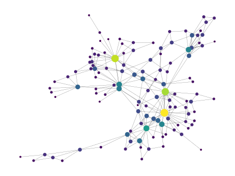

orgroamtools documentation
orgroamtools is a work-in-progress replication of obsidiantools–a Python library to assist in data analysis of Obsidian collections–but for org-roam collections.
Getting Started
Install with pip install orgroamtools.
Ensure your org-roam v2 database is up-to-date by running (org-roam-db-sync) inside Emacs. Locate your database by checking the value of (org-roam-db-location).
Once you’ve imported the RoamGraph object, you can load your collection:
from orgroamtools.data import RoamGraph
collection = RoamGraph(PATH_TO_DB)
Data Provided
The central object is the RoamGraph object, which stores a collection of RoamNode objects and the graph structure they create via backlinks.
The data contained in the RoamNode includes its ID given by org-mode, its title, the file it resides in, the org-tags it has, its list of backlinks to other nodes, and the list of other org-links that are not backlinks.
Indices
An index refers to an object of type dict[str, T] where the keys are IDs of nodes and T is some information about the node with the associated ID.
The library provides several indices:
node_index:Tis theRoamNodeof the node with corresponding IDtitle_index:Tis the title of the nodetag_index:Tis the set of tags a node hasbacklink_index:Tis the list of backlinks to other nodes in the nodefile_index:Tis the filename where the node is locatedmisc_link_index:Tis a list of other org-links that are not backlinks. e.g. links to files, websites, etcIndices extracting from the body text of the node:
body_index:Tis the body of the node: its text and that of its subheadings (with their heading lines), without its own heading line, property drawer, or a file’s#+title:/#+filetags:lines. Links are shown as their descriptions. Files are read when the index is requested and cached until they change on disk.math_snippet_index:Tis a list of LaTeX math snippets inside the node, in document order and with surrounding whitespace removedSupported delimiters:
\(...\),\[...\],$...$,$$...$$; the environmentsequation,align,gather,multline,flalign,eqnarray,mathanddisplaymath(each optionally starred); and#+begin_equation/#+begin_latexblocks. Text inside source blocks is ignored.
src_block_index:Tis a list of tuples(S,W)whereSis the language of the source block (Noneif not given) andWis its content
For example, a node whose body is:
Since $e^{i\pi} = -1$, we have
\begin{equation*}
e^{2i\pi} = 1
\end{equation*}
It costs $5 and $6.
has math_snippet_index entry ["e^{i\pi} = -1", "e^{2i\pi} = 1"].
As an example of how to use these indices, let’s make our own backlink_index but instead of using lists of org IDs for the backlink lists, we’ll make them the title of the nodes.
The title_index property provides a mapping from ID -> title, so we could make it a simple one-liner:
net = RoamGraph(PATH_TO_DB)
backlink_index_titles = {node.id : [net.title_index[ID]
for ID in node.backlinks] for node in net.nodes}
NetworkX Graph
The RoamGraph object also provides a networkx.MultiDiGraph representation of the network. The networkx library is very feature-rich for graph manipulations, and can be used to create nice visualization such as this:

Manipulation of the Collection
In addition to this information, primitive manipulations of the collection are
provided, such as filtering the collection by tag
(orgroamtools.data.RoamGraph.filter_tags()) and removal of orphans
(orgroamtools.data.RoamGraph.remove_orphans()). Both return a new
RoamGraph and leave the original unchanged.
For other manipulations, build a new node index and assign it to
orgroamtools.data.RoamGraph.node_index. The graph, the indices, and the
list of orphans are recomputed automatically, and links to nodes that are no
longer present are dropped.
For example, to remove the node with ID foo from a collection bar:
bar.node_index = {ID: node for ID, node in bar.node_index.items() if ID != "foo"}
Links to foo from the remaining nodes are removed by the assignment.
Calling refresh() is no longer necessary and is deprecated.
General Notes
Because org-roam allows you to have multiple nodes with the same title, the ID of a node is guaranteed to uniquely identify a node in your collection.
For user ergonomics, you are permitted to identify nodes by their title.
For example, in the orgroamtools.data.RoamGraph.node() function, the identifier argument can be either a node title or node ID.
If no node matches an identifier, orgroamtools._utils.NodeNotFoundError
(a KeyError) is raised.
If the network detects multiple nodes with the same title and you attempt to identify a node by the duplicated title, you will be warned that it might not be the output you wanted.
If a node’s file has been deleted or edited since the database was last
synced, its body is returned as "" with a
orgroamtools._utils.BodyNotFoundWarning. Run
(org-roam-db-sync) to refresh the database.